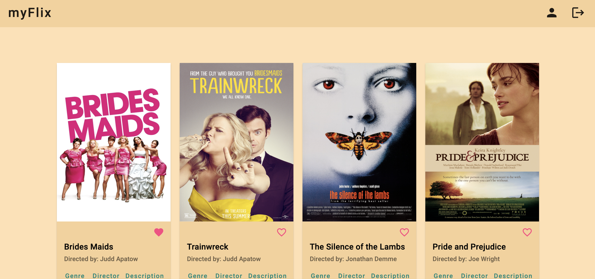
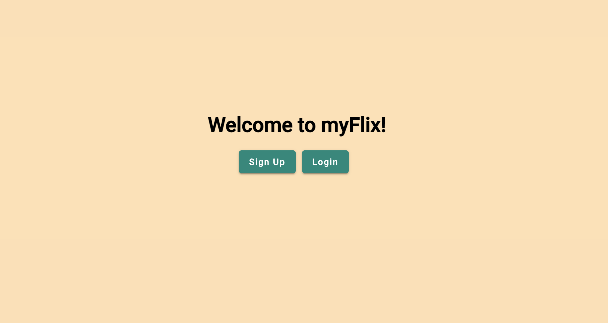
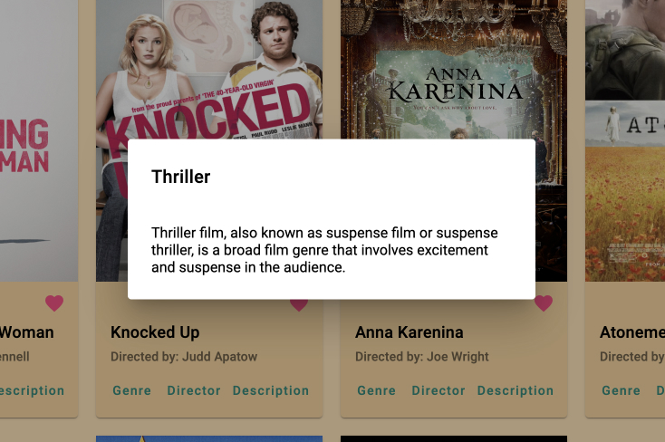
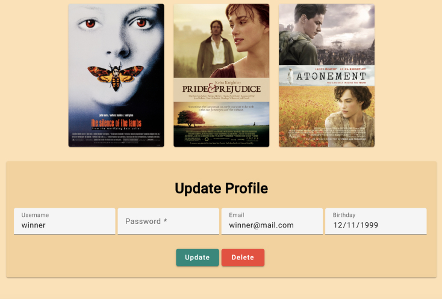

myFlix is an app for movie enthusiasts to be able to access information about different movies, directors, and genres whenever they want. Users are also able to create an account and save their favorite movies to their page as well as update their profile information. This app was built with Angular, Node.js, and npm.
My objective when building the myFlix angular app was to use a previous
server-side database I built to create a client-side app for users. By
doing so I was able to expand upon my skills as a frontend developer,
adding Angular and Node.js to my toolkit.

I built myFlix as a project for my CareerFoundry course to show my skills with Angular, Node.js, npm. As well as practicing my ability to comment on my code with TypeDoc for myself and future developers who view the project.
I started by creating the new app from my terminal and ran the command
to fetch the API I previously created.
I then implemented user registration and login forms using Angular
Material.
After the user registration forms I added welcome component, movie
component, and profile components and used Angular's router to implement
a route for each view. Along with adding UI to create a better look/feel
to the app.
Finally, I added comments in my code using TypeDoc to explain the
choices I made in development.

Angular
Angular Material
Node.js and npm
TypeDoc
GitHub Pages
This project in total took about 3 weeks to complete. This time also
included projects outside of the app itself such as project management,
collaboration, providing constructive feedback, and contribution to the
tech community.

I went into this project feeling confident as I had already created a
similar app using React. However, I did find Angular to be a bit more
intimidating at first.
Throughout the project I learned that I enjoyed using features Angular
has, Angular Material for instance and look forward to building other
apps in the future with this framework.
Lead Developer: Madison Housman
Mentor: Alfredo Salazar Vélez
Tutor: Jubril Akolade